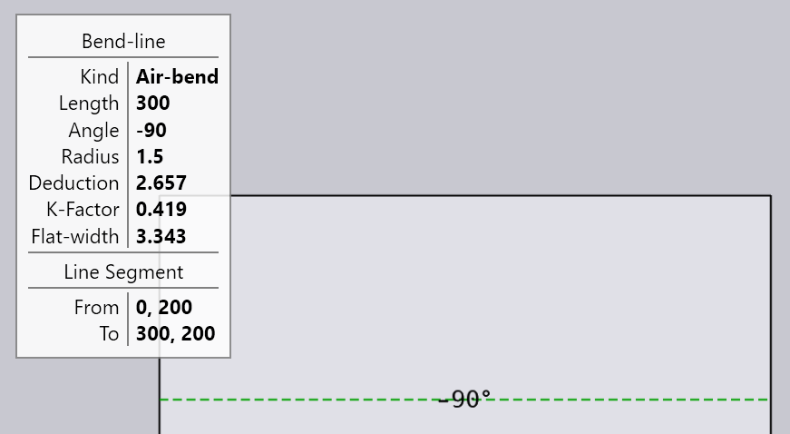
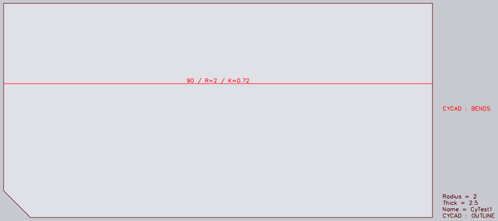

2006BendInfoInDXF
product: flux org: metamation tags: [metamation, knowledge-base, flux, notes, legacy, tech] type: note project: Flux source: Notes/Tech/2006.BendInfoInDXF.ftx updated: 2026-07-13
2006 ◉ Bend Information in DXF files
[!info]- Revision history
Rev Date Author Note V1 2014-04-16 AV V2 2018-07-06 AV Extended to support simple TEXT
The DXF file format is widely used for storing and transmitting 2-D drawing data. However, this file format (nor its sister format DWG) do not define a mechanism for defining bend lines. Since this is a basic requirement for sheet metal drawings, some conventions are used to store bend lines in DXF files. Flux supports some of these conventions.
Bend Information in TEXT entities
The simplest way to transmit bend information to Flux is to create TEXT entities containing the required information. For each LINE that should be treated as a bend, a TEXT entity is created that has an insertion point that lies somewhere exactly on that LINE. The format of the text should be like this: A-75 R1.2 K0.83
The value after A is the bend angle - depending on the Angles in DXF setting in the Import/Export page of the Settings dialog, this could be either the interior angle, or the exterior (turn) angle. The value after R is the inner radius of the bend, and the value after K is the K-Factor of the bend. This could be either an ISO or DIN K-Factor; Flux will figure out which one is meant.
Here's an example of such a TEXT entity that is attached to a LINE:
If this DXF file is imported, the text entity and the line are combined together and converted into Flux bend-line entity. After import, the TEXT is no longer visible, and the information it carried is applied to the bend line:

The actual layers in which the line or text reside, the size and style of the text, the angle of the text are all ignored during this import. It just matters that the TEXT entity's insertion point be snapped to the LINE entity. Instead of a LINE entity, the geometry defining the bend location could also be a POLYLINE or LWPOLYLINE entity with a single linear segment.
CyCAD format
The CyCAD format (used by the CyCAD drawing system, as well as by some other utilities) is a variation of the format described above. It uses some special layer conventions to structure the bend information, and it also provides some drawing metadata in the form of TEXT entities. Here is a very simple CyCAD format DXF file:

Part outline layer: There is a special layer in which all the part outlines are drawn. This layer does not have any pre-assigned name, but is the layer in which the text entity CYCAD : OUTLINE is found1. All the part outlines, as well as holes, are drawn in this layer.
Bend-data layer: There is another layer in which all the bend lines (and the text entities defining the bend-line properties) are drawn. This layer is identified as being the layer containing the text entity CYCAD : BENDS
Drawing metadata
There can be some text entities in the part-outline layer, that define some drawing-level metadata. These take the form of Key = Value pairs2. These are the keys that are currently recognized3:
| Key | Meaning |
|---|---|
| Name | The name for the part (if this is missing, the part is named by using the file-name of the DXF file that it was imported from) |
| Thick | The part thickness |
| Radius | The default bend-radius that applies to all bends where the radius is not specified |
| Inch | This key is special - it has no value, and the presence of this key implies that the drawing is in inches. If this is not found, the default unit for the drawing is mm. This unit applies both to the geometry found in the drawing, as well as to linear measurement values found in the text of key-value pairs. |
Bend-line metadata
Bend-lines in the CyCAD format are just LINE entities that are drawn in the special bend-data layer. Each of these bend-line entities is typically decorated by having a TEXT entity near it that contains some information about the bend.
Flux uses this algorithm to figure out which TEXT entities are to be associated with which LINE entities. For each text entity in the bend-data layer, it uses the insertion point4 of the text and searches to find the closest LINE entity (in the bend-data layer). It associates the text entity with that line entity and goes on to the next TEXT entity. It is possible that some bend-lines may not have any text entities associated with them; in this case, they will become 90 degree bends with the default radius. (This is not recommended).
The text entity for the bend-line metadata contains a number at the beginning; this number is the interior angle of the bend, in degrees. Positive numbers are up-bends, while negative numbers are down-bends. Following this there can be a set of additional key-value pairs. Each key is separated from its value using an = sign, and the various key-value pairs are separated by forward / slashes. Here are the possible keys pairs supported for bend-line metadata:
| Key | Meaning |
|---|---|
| R | Inner radius for bending |
| K | The K-factor, as per DIN6935 (not ANSI) convention. K=0 means the neutral line corresponds to the internal surface. K=1.0 means the neutral line is in the middle of the thickness. |
For example, here is a typical bend-line annotation:
120.0 / R=2.14 / K=0.716
Group 1000 Codes
Some drawing systems add bend annotations to LINE entities (or even to POLYLINE or LWPOLYLINE entities with just a single segment), effectively converting them to bending lines. These are stored as 1000 Group codes (or extension codes, according to the DXF specification). Since there exists no precise definition or specification for these codes, we describe below some common conventions that are used by various modelers - these are all supported by Flux.
In this system, a LINE entity contains several 1000-group codes, each of which is a key-value pair, separated by a colon. Several keys are recognized by Flux, but for Flux to identify such a set of group codes as bend information, the BEND_ANGLE: or TC_BEND_ANGLE: key must be present. All the others are optional and have reasonable default values.
| Key | Meaning |
|---|---|
| BEND_ANGLE:, TC_BEND_ANGLE: | Bend angle. Depending on the Angles in DXF setting in the Import/Export page of the Settings dialog, this is treated as either an interior angle or an exterior (turn) angle. |
| MATERIAL: | The material name - note that this is not really a per-bendline setting, but some modelers transmit the part's material in this key |
| THICKNESS: | The part's thickness - note that this is not really a per-bendline setting, but some modelers transmit the part's thickness in this key |
| BEND_RADIUS: | Inner radius of the bend |
| BEND_FACTOR: | The bend deduction |
| DIE:, BEND_DIE_ID: | The die to be used for this bend (could be a die name, or a die-group name) |
| PUNCH: BEND_PISTON_ID: | The punch to be used for this bend (could be a punch name, or a punch-group name) |
| K_FACTOR: | The K-factor (neutral axis position) for this bend. Either a DIN or ISO K-Factor can be provided; Flux will figure out which one is intended. |
| BUMP_COUNT: | For a bump bend, the number of bumping steps |
Converted from the FTex source
Notes/Tech/2006.BendInfoInDXF.ftx— see [[Flux Notes]] for the index.
-
Traditionally, in the CyCAD format, there are spaces before and after the colon, but Flux is tolerant of this; the layer is recognized whether you use CYCAD : OUTLINE or CYCAD:OUTLINE↩
-
Flux is agnostic to having spaces before and after the equals sign.↩
-
Flux does not treat the keys as case-sensitive↩
-
The CyCAD format specifies the bottom-left-corner point of the text, but this is not very portable. In DXF files, text is defined by providing an insertion point, and then selecting vertical and horizontal alignments that indicate how that insertion point is to be treated. If the insertion point is defined as top-right, for example, the computation of the bottom-left corner point is not portable across systems, since it defines on the exact font-file used for the text. These font files are not transported with the DXF, and the font used in the creating system may often not be found in the receiving system. Flux itself does not care, and simply uses the insertion point of the text, which is constant and unvarying. To ensure portability with other CAD packages, you could simply always use the bottom-left alignment when creating these bend-line annotations.↩